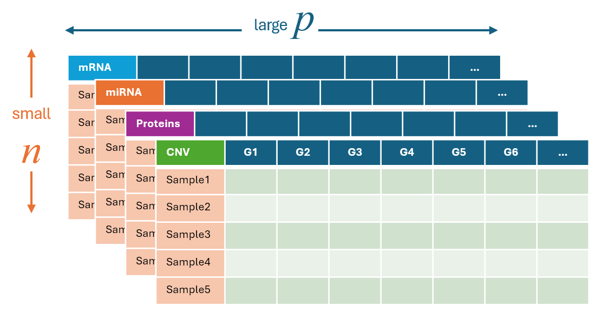
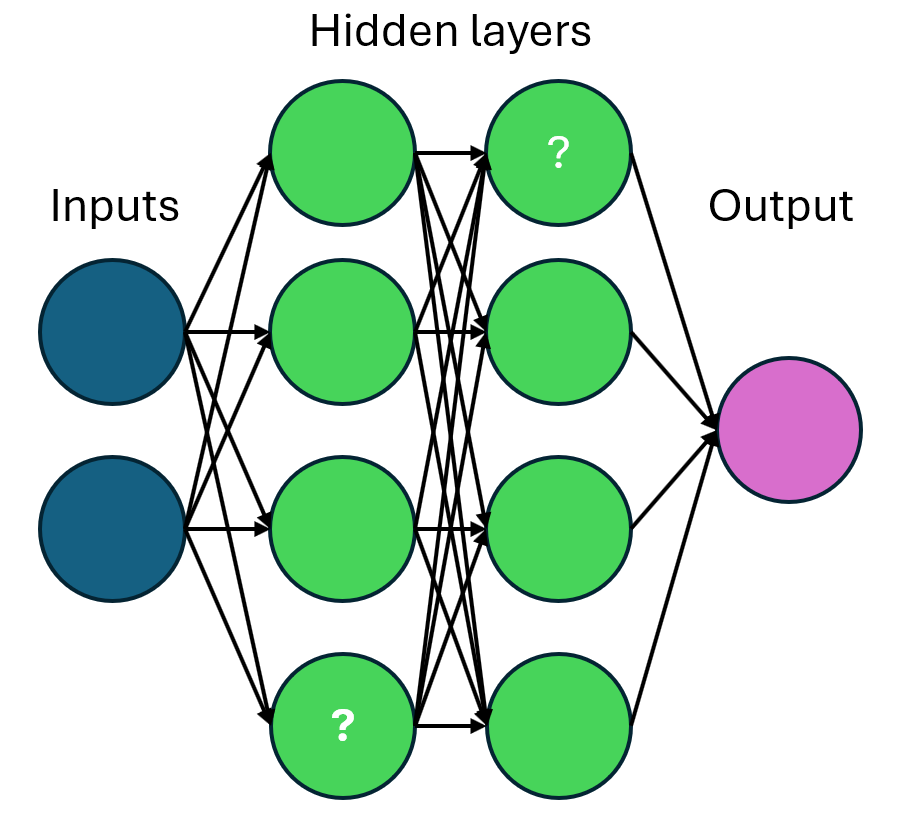
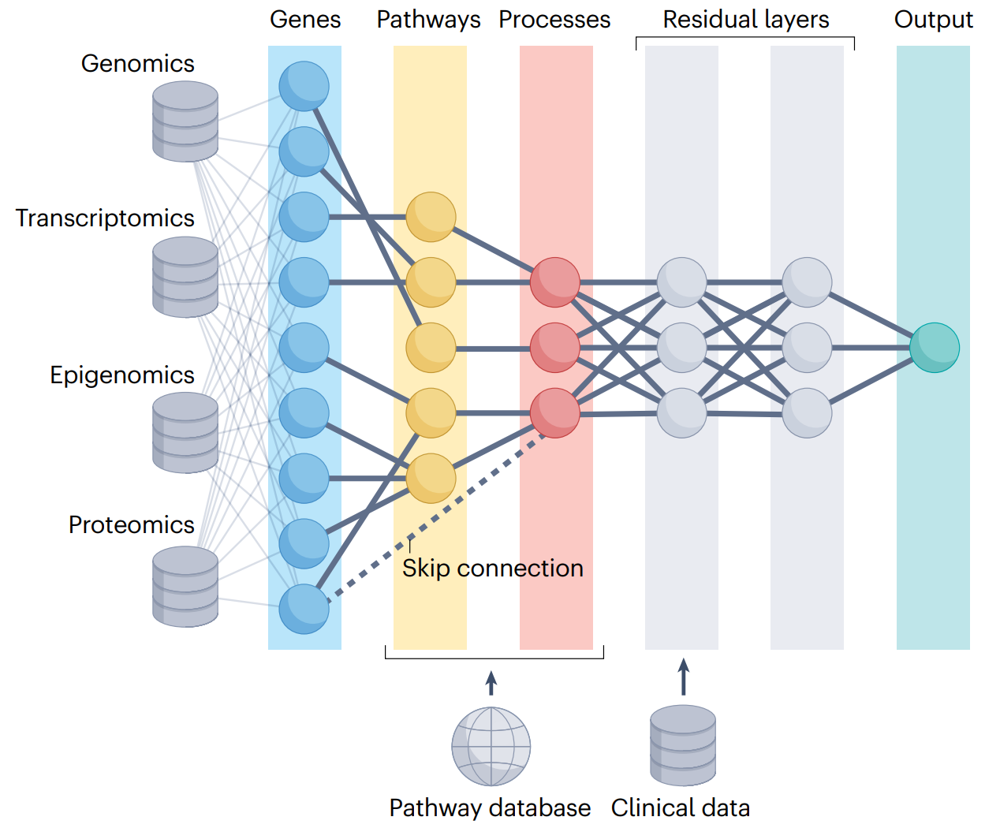
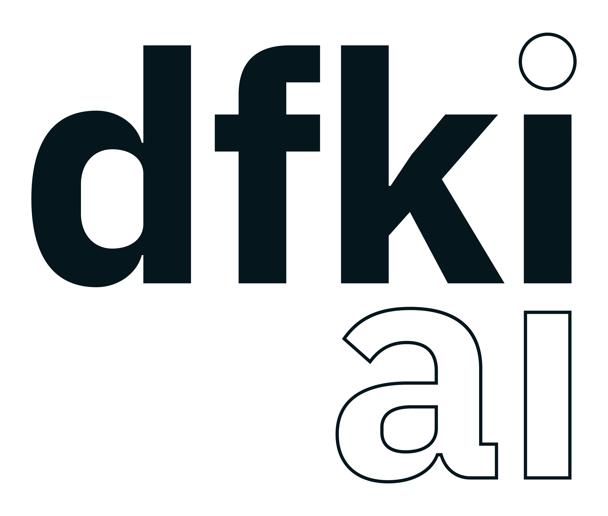

Knowledge-enhanced biomarker discovery
Trifels Spring School 2025: AI in Bioinformatics
DFKI
24th March 2025
Preamble
David Selby
Senior Researcher
Data Science & its Applications
david.selby@dfki.de
© David Selby
© David Selby
© David Selby
© David Selby
Workshop objectives
By the end of this session, we aim to:
Understand role of prior knowledge in biomarker discovery Learn how to integrate biological context into workflows Explore tools for knowledge-guided analysis Discuss challenges in knowledge-guided AI for biomedicine
1 Introduction & Motivation
Knowledge enhanced (multi-omics) biomarker discovery
Why? Where? How?
What makes it hard?
What are we looking for?


timeline
title A short history of biomarker discovery
%% section Before AI Integration
1949 : Introduction of 'biochemical markers' (Mundkur)
1970s : Term 'biomarker' coined (1973) : Prostate-Specific Antigen discovered (1979)
1990s : BRCA1 gene discovered by Mary-Claire King (1990) : BRCA1 gene cloned (1994)
%% section After AI Integration
2000s : 'biomarker' formally defined* (2000) : NGS introduced (2005) : QRISK (2007)
2010s : liquid biopsy : endotypes : CRISPR : ImageNet : GANs : BERT : SHAP
2020s : AlphaFold : GPT-3 : Blood-based biomarkers for Alzheimer's
Bodaghi, Fattahi & Ramazani. Biomarkers. Heliyon (2023). doi:10.1016/j.heliyon.2023.e13323
Ng, S., Masarone, S., Watson, D. et al. The benefits and pitfalls of machine learning for biomarker discovery. Cell Tissue Res (2023). doi:10.1007/s00441-023-03816-z
Key challenges
- High dimensionality & small sample sizes (\(p \gg n\))
- Heterogeneous data modalities
- Complexity–interpretability tradeoff
- Validation in diverse cohorts
- FAIRness of data, methods and tools
Signatures or biomarkers
(Sets of) features predictive of a biological outcome
Multi-omics biomarker discovery
- Contrasts with single-omics
- Combines
- genomics, transcriptomics, proteomics, metabolomics, …
- cliniomics, radiomics, …
- Identify robust signatures for disease diagnosis, prognosis or treatment

Knowledge-intensive machine learning
- Prior knowledge can guide model training
- Interpretability is crucial for clinical adoption
- Easy to overfit in high-dimensional space
- Biomedical analytical insights not easy to reproduce
- data wrangling
- domain expertise
- model interpretations
2 Prior knowledge
What is prior knowledge?
- scientific publications in literature
- open datasets (e.g. TCGA, OpenML, UCI)
- domain-specific databases (e.g. KEGG, Reactome, GO)
- networks data (e.g. protein-protein interactions)
- ontologies
- expert knowledge (Bayesian decision-making)
How can prior knowledge be encoded in a transparent, reproducible way?
Approaches
- Regularization
- Knowledge graphs
- Biologically-informed architectures
Information theory
Entropy \(H(X)\) quantifies uncertainty in a random variable \(X\)
- Higher entropy → more uncertainty
- Lower entropy → more certainty
Prior knowledge reduces entropy:
- Narrows the hypothesis space
- Focuses on biologically plausible solutions
Example: biomarker discovery
Without prior knowledge, search space includes all possible gene combinations (high entropy, expensive).
With prior knowledge, focus on pathways, interactions, or known gene sets (low entropy, faster convergence).
Mutual information \(I(X;Y)\) measures shared information between \(X\) (data) and \(Y\) (prior knowledge).
Higher \(I(X;Y)\) → more effective integration of prior knowledge
Mutual information can be expressed \[ I(X;K) = H(X) - H(X|K), \] where
- \(H(X)\) is the entropy (uncertainty) of the data \(X\)
- \(H(X|K)\) is the conditional entropy of \(X\) given prior knowledge \(K\).
Reduction in entropy is equivalent to the mutual information: \(\Delta H = I(X;K).\)
Tip
The greater the mutual information \(I(X;K)\), the more effective the prior knowledge \(K\) is in narrowing the hypothesis space.
Shannon, C.E. A Mathematical Theory of Communication. Bell System Technical Journal (1948). doi:10.1002/j.1538-7305.1948.tb01338.x

Entropy \(H(\cdot)\), conditional entropy \(H(\cdot\mid\cdot)\) and mutual information \(I(\cdot; \cdot)\)
Example of entropy in biomarker discovery
Without Prior Knowledge:
- Searching among 10,000 genes.
- Entropy: \(H(X) = \log_2(10,000) \approx 13.29 \text{ bits.}\)
With Prior Knowledge:
- Prior knowledge narrows the search to 100 candidate genes.
- Entropy: \(H(X|K) = \log_2(100) \approx 6.64 \text{ bits.}\)
Mutual Information
- Reduction in entropy:
\(I(X;K) = H(X) - H(X|K) = 13.29 - 6.64 = 6.65 \text{ bits.}\)
Lower entropy ≠ correctness
Prior knowledge (and data) can still be wrong/biassed!
Then smaller hypothesis space → barking up the wrong tree.
3 Multi-omics integration
Krassowski at al. (2020). State of the Field in Multi-Omics Research. Frontiers in Genetics. doi:10.3389/fgene.2020.610798
Single-omics methods
| Task | Tools |
|---|---|
| DESeq2, edgeR, limma | |
| \(k\)-means, hierarchical clustering, \(t\)-SNE, UMAP | |
| GSEA, Reactome | |
| GLMs, random forests, SVM, XGBoost, NNs |
Single-omics challenges
| Challenge | Methods | Tools/Packages |
|---|---|---|
| \(p \gg n\) | Dimensionality reduction | PCA, t-SNE, UMAP, LASSO, ElasticNet |
| Batch effects | Batch effect correction | ComBat (sva), limma, Harmony |
| Missing data | Imputation | MICE, KNN imputation, MissForest |
Tip
Single-omics data is tabular, for which tree-based models (e.g. random forests) can outperform deep learning.
Grinszjtajn et al. Why do tree-based models still outperform deep learning on typical tabular data? NeurIPS. (2022)
Multi-omics data bring extra challenges
- Integration of different data types
- Interpretation of complex interactions
Multi-omics datasets
- Tabular data
- High-dimensional
- Small samples
- Multimodal structure
Why deep learning?
Why not just use classical methods?
Classical approaches
- Multi-omics factor analysis (MOFA)
-
Unsupervised, generalization of PCA
- Canonical correlation analysis (CCA)
-
Find linear combinations of features that are maximally correlated
- Grouped LASSO
-
(Linearly) penalize groups of features together
Why deep learning?
Why not just use classical methods? Isn’t it tabular data?
- Non-linear relationships
- Interactions between features
- Representation learning from raw data
- End-to-end learning
flowchart LR
A[Feature Selection] --> B[Modelling]
B --> C[Pathway Enrichment]
Park et al. Sparse overlapping group lasso for integrative multi-omics analysis. J Comput Biol. (2015) doi:10.1089/cmb.2014.0197
Deep learning architectures
Question
Which neural network architectures are suitable for omics?
Multimodal fusion
When should we combine omics layers?

Cai, Poulos, Liu & Zhong. Machine learning for multi-omics data integration in cancer. iScience. (2022). doi:10.1016/j.isci.2022.103798
Multimodal fusion
When should we combine omics layers?
- Early
-
easier, loss of information, worse performance*
- Intermediate (mixed, joint)
-
modality-specific layers, but harder to train
- Late
-
may not capture interactions
*Hauptmann, T., Kramer, S. A fair experimental comparison of neural network architectures for latent representations of multi-omics for drug response prediction. BMC Bioinformatics 24, 45 (2023). doi:10.1186/s12859-023-05166-7
Late fusion (MOLI)

Sharifi-Noghabi et al. Bioinformatics. 2019. doi: 10.1093/bioinformatics/btz318
Graph neural networks (GNNs)

MOGAT
Tanvir et al. MOGAT. International Journal of Molecular Sciences, (2024). doi:10.3390/ijms25052788
Model explanations
Can we call hidden nodes in neural networks ‘biomarkers’?
Model explanations
Input-level explanations:
- \(p\)-values, features importance
- DeepLIFT
- SHAP
- LIME
→ post-hoc gene-set enrichment analysis (GSEA) or “pathway analysis”

Gene set enrichment analysis
Set of genes \(G = \{g_1, g_2, \dots, g_N\}\). Order by ranking metric \(S(g_i)\) (e.g. t-statistic)
Compute enrichment score using running sum statistics, or overrepresentation score with hypergeometric test: \[ P(X = x) = \frac{\binom{M}{x} \binom{N-M}{n-x}}{\binom{N}{n}} \] with \(p\)-value \[ p = \sum_{i=x}^{\min(M, K)} P(X = i). \]
What is a pathway (gene set)?

Reactome pathways
A pathway is a set of genes that are known to interact in a biological process.
Pathway databases


Pathway enrichment analysis
What are the disadvantages of using post-hoc GSEA or GSOA?
4 Visible neural networks
Feedforward neural network
Visible neural network (VNN)

DCell
Yu et al. Visible Machine Learning for Biomedicine. Cell (2018) doi:10.1016/j.cell.2018.05.056
Knowledge-primed neural network

Fortelny & Bock. Knowledge-primed neural networks. Genome Biology (2020). doi:10.1186/s13059-020-02100-5
Biologically informed neural network (BINN)

P-Net
Elmarakeby et al. Biologically informed deep neural network for prostate cancer discovery. Nature, (2021). doi:10.1038/s41586-021-03922-4
VAE enhanced by gene annotations (VEGA)

VEGA
Seninge, et al. VEGA. Nature Communications (2021). doi:10.1038/s41467-021-26017-0)
Anatomy of a BINN/VNN
Selby, D.A. et al. Nature Reviews Genetics (2025). doi:10.1038/s41576-025-00826-1
How to build a VNN
- Start with dense sequential neural network
- Use adjacency matrix of inputs → pathways as a masking matrix
- (Optional) for next layer, mask = mapping of pathways → higher pathways
- Omit all masked weights from backpropagation
Warning
What if the pathways aren’t all the same depth?
Pathway discovery with BINNs

PathExpSurv
Hou et al. PathExpSurv. BMC Bioinformatics, (2023). doi:10.1186/s12859-023-05535-2
Interpretable AutoML discovery
Open question
If (1) VNNs perform better, and (2) Pathway DBs are incomplete; then
Can neural architecture search over VNNs discover new pathways?

Han et al. (2015). arXiv:1506.02626v3
5 Hands-on
Accessible tools for BINNs
…would be a very good idea
…and various other paper repos you can git clone.
Nothing for R… yet!
What’s missing?
- multi-omics
- integration with clinical data
- survival analysis (censored time-to-event)
- R + BioConductor
The binn package
Documentation
The binn package - inputs
What’s required:
data_matrix
- \(n \times p\) matrix of omics data
mapping
- \(p \times 2\) 2 column matrix of features to pathways
- or
'uniprot'
pathways
- \(? \times 2\) matrix: parent → child pathway
- or
'reactome'
design_matrix
- matrix \(n \times 2\) of targets
sample,group group= output class
The binn package - visualization

Node importance plot
Worksheet
Colab notebook and slides: github.com/datasciapps/trifels2025
6 Discussion
Challenges
- Lack of Robust Tools: Few standardized frameworks, poor interpretability and limited benchmarks.
- Alternative Models:
- Classical methods: faster, more interpretable, statistically robust
- GNNs: Better structural representation but need high-quality pathway graphs.
- Transformers/LLMs: Strong sequence modeling but lack explicit pathway structure.
- Hybrid Approaches: Combining VNNs with GNNs or transformers may improve learning.
- Pathway Databases Are Incomplete: KEGG, Reactome, and GO suffer from curation bias, lack context specificity, and may be outdated.
Open questions
Biological fidelity
- Is a BINN really a digital twin of a cell?
- Biological sparsity or just noisy sparsity?
Model validation
- Synthetic and experimental data for validation
- Uncertainty-aware architectures to quantify confidence in biological predictions.
Performance vs interpretability
- Mechanistic insight vs. predictive accuracy: which should take priority?
- Do black-box models merely reinforce existing biases in pathway databases?
Things we didn’t cover today
- Causal inference
- Dynamic updating of knowledge graphs
- Bayesian prior elicitation
- GenAI: LLM agents & retrieval-augmented generation
Thank you!
Further reading
Selby, D.A. et al. Beyond the black box with biologically informed neural networks. Nature Reviews Genetics (2025). doi:10.1038/s41576-025-00826-1
To export these slides, hit E and then Print to PDF.
